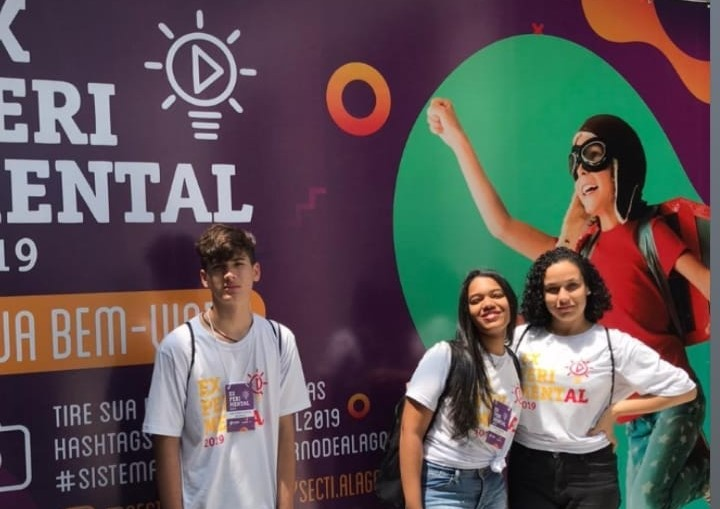
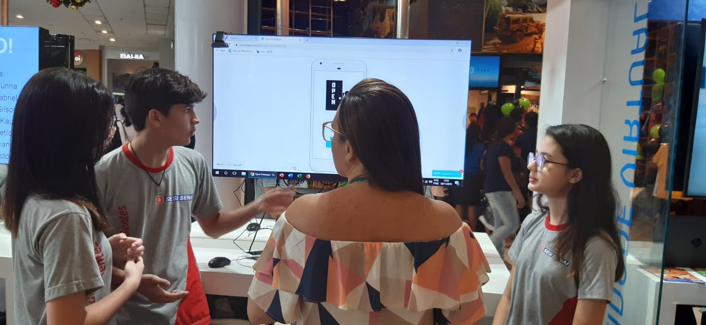

15 de setembro de 2019
Smart Bus
Aos meus 15 anos se dava início o desenvolvimento e pesquisa do projeto Smart Bus, dentro do ramo da mobilidade urbana pública.
O projeto consistia no desenvolvimento de um sistema de catracas utilizando arduino e linguagem C++ para
dar vida a um protótipo. No total, foram duas semanas de estudo em uma equipe que incluía a mim, responsável por preparar a documentação
que seria utilizada em apresentações e os textos utilizados, duas alunas, entre elas a criadora original do projeto, que trabalhavam
na coleta de dados, um programador que organizou a arquitetura do protótipo e mais dois professores orientadores.
5 e 6 de dezembro de 2019
Experiment-AL 2019 - Smart Bus

Experiment-AL 2019 foi um dos eventos onde a equipe do Smart Bus esteve presente para apresentar o projeto,
o evento aconteceu durante a Bienal de 2019 em um dos bairros históricos de Maceió-AL, consistia em trazer à tona
projetos de iniciação científica dos colégios públicos e privados da cidade, os projetos foram pré-selecionados para participarem
através de suas documentações, o Smart Bus foi escolhido entre outros 80 projetos da mesma instituição, o evento foi organizado pela
SECTI (Secretaria de Tecnologia e Inovação) de Alagoas.
20 de dezembro de 2019
Open - Desemprego

Nos últimos meses de 2019 tomei iniciativa para participar de mais um evento de tecnologia e inovação,
desta vez o projeto desenvolvido foi o Open, uma ferramenta mobile em formato de app que consistia em
auxiliar em um só lugar as pessoas que buscavam empregos em áreas de trabalho escassas, uma ferramenta inspirada
em plataformas como: LinkedIn e Vagas.com . Este projeto foi comandado e idealizado por mim, utilizava apenas de
HTML e CSS para construir um protótipo, mas uma equipe de 10 alunos(incluso a mim) e 1 professor/orientador para realizar
uma pesquisa em larga escala e obter dados precisos sobre o desemprego no país para implementar as soluções para os problemas.
o Projeto não foi tecnicamente inovador, pois sua idealização tinha como objetivo desenvolver as habilidades
de comunicação dos alunso e estimulá-los a encontrar soluções quebrando o problema(desemprego) em problemas
menores e utilizando de técnicas como Brainstorm e reuniões diárias para avaliar as soluções e
os custos de desenvolvimento do projeto final.
15 - 23 de maio de 2023
NLW Spacetime
Durante o evento NLW Spacetime da rocketseat, aprimorei algumas das minhas habilidades em contruções de layouts de pa´ginas, e,
acima de tudo, pude aprender bastante sobre como me integrar a uma comunidade de devs, ajudar pessoas através da programação e
manter meu estado mental em foco e dedicação nos estudos, foi durante este evento onde desenvolvi esta página de cápsula do tempo.